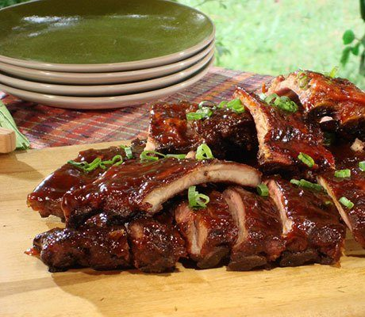

Nyama Choma

The nyama choma is a specialty of grilled goat meat.
Kenyan Nyama Choma is considered to be the national dish of Kenya. It literally means “roast meat” in Swahili. This dish can be found in the finest restaurants to many venders on the street.
Ingredients
- Goat or beef meat(short ribs work great, about -- 2 pounds)
- 1 tablespoon oil
- warm water 1 cup
- kosher or sea salt
Steps
- Season your grill with oil.
- Get your grill going to medium heat Stir the salt into the warm water until it is fully dissolved. Put the salt solution in a spray bottle.
- Grill the meat, basting it occasionally with the salt water, until it is cooked to your liking.
- Remove the meat and serve with sukuma wiki and irio.
Return to Main Page